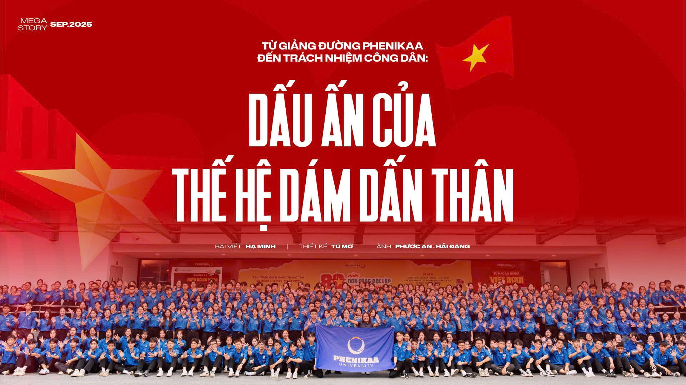

The 80th National Day celebration on September 2nd at Ba Dinh Square was a moment for the entire nation to look back on the glorious past, and at the same time affirm the country's strength and aspirations to rise in the new era. In the parade formation and the volunteer team, the presence of young intellectuals and Phenikaa University students became a special symbol: Where science and youth converge, together continuing the journey of serving the Fatherland with knowledge and dedication.
From Phenikaa lecture hall to civic responsibility: The mark of a generation that dares to take risks
